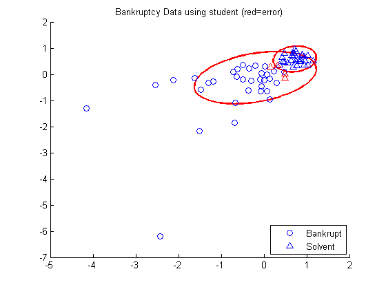
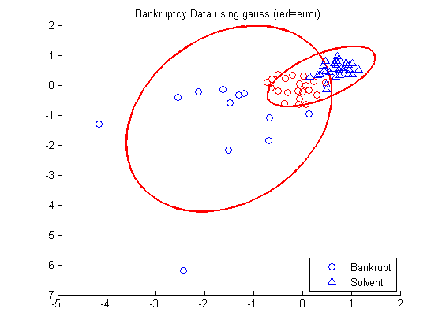

Contents
function mixStudentBankruptcyDemo()
Fit a mixture of Student T distributions to the bankruptcy data
setSeed(0);
bank = importdata('bankruptcy.txt');
Y = bank.data(:,1);
X = bank.data(:,2:3);
[N, D] = size(X);
X = standardizeCols(X);
K = 2;
[model] = mixStudentFitEm(X, K);
model.dof
if 0
for c=1:K
fprintf( 'c = %d\n', c);
model.mu(:,c)
model.Sigma(:,:,c)
model.dof(c)
end
end
[zhat] = mixStudentInfer(model, X);
figure;
process(model, zhat, X, Y, 'student');
[model] = mixGaussFitEm(X, K);
[zhat] = mixGaussInfer(model, X);
figure;
process(model, zhat, X, Y, 'gauss');
ans =
999.9999 2.3422
Num Errors using student: 10
Num Errors using gauss: 21
 
end
function process(model, classes, X, Y, name)
K = model.K;
hold on;
for c=1:K
gaussPlot2d(model.mu(:,c), model.Sigma(:,:,c));
end
idx1 = find(classes == 1);
idx2 = find(classes == 2);
error1 = sum(Y(idx1) ~= 1) + sum(Y(idx2) ~= 0);
error2 = sum(Y(idx1) ~= 0) + sum(Y(idx2) ~= 1);
error = error1;
if (error2 < error1)
classes = classes + (classes == 1) - (classes == 2);
error = error2;
end
idxbankrupt1 = find(Y == 0 & classes(:) == 2);
idxbankrupt2 = find(Y == 0 & classes(:) == 1);
idxsolvent1 = find(Y == 1 & classes(:) == 1);
idxsolvent2 = find(Y == 1 & classes(:) == 2);
h1 = plot(X(idxbankrupt1, 1), X(idxbankrupt1,2), 'bo');
plot(X(idxbankrupt2, 1), X(idxbankrupt2,2), 'ro');
h2 = plot(X(idxsolvent1, 1), X(idxsolvent1,2), 'b^');
plot(X(idxsolvent2, 1), X(idxsolvent2,2), 'r^');
title(sprintf('Bankruptcy Data using %s (red=error)', name ));
legend([h1 h2], 'Bankrupt', 'Solvent', 'location', 'southeast');
fprintf('Num Errors using %s: %d\n' , name, error);
end